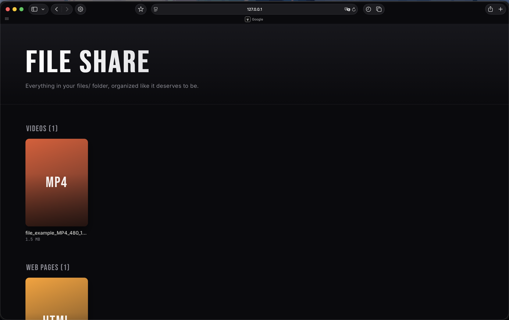
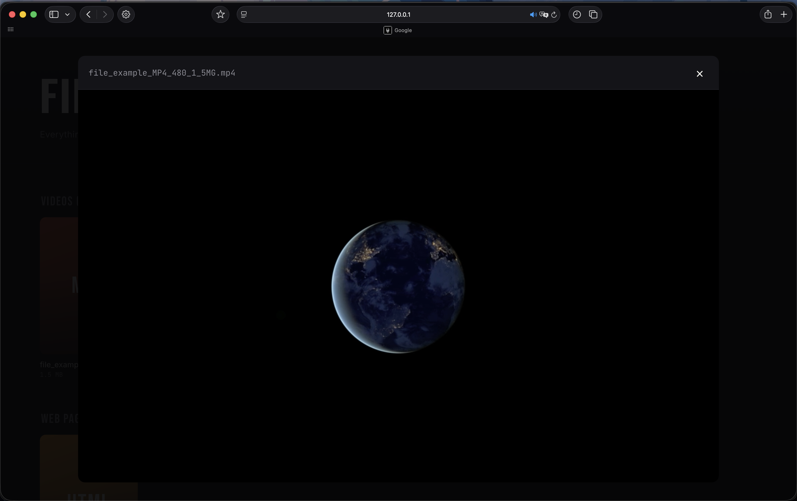
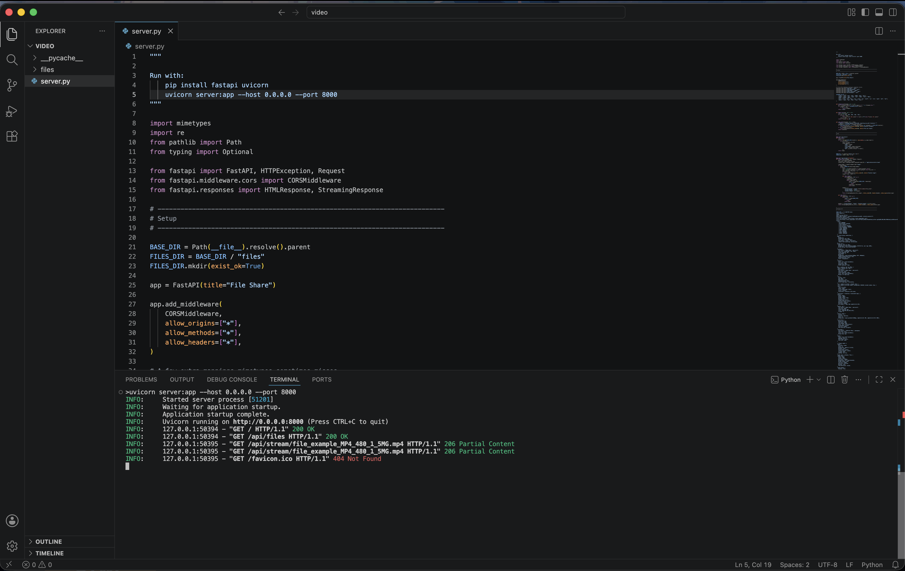

This project is a FastAPI-based file hosting server with a web interface for browsing and accessing files remotely. Files placed in the server’s /files directory are automatically made available through the website, where users can browse them and open or stream supported media such as videos. The Flask server handles the backend and serves the files over HTTP, while the HTML interface determines how the files and other content are presented to the user. The server is designed to run continuously, allowing the files to be accessed whenever the server is online. I built it as a simple foundation for things like personal cloud storage, private file sharing, or even a self-hosted media platform similar to a basic Netflix.



$ curl -O project-file-server.zip
View source on GitHub